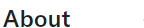

News that lasts.


Schwartz Media publishes intelligent news and current affairs that breaks the 24-hour news cycle. We offer a nuanced examination of Australia and the world, focused on fresh insight and literary expression. Our audience reads to know, not just to agree. We invest in long-form journalism where the issues demand it, providing writing of a quality that makes difficult topics clear. Schwartz Media publishes Australia’s most respected writers across The Saturday Paper, The Monthly magazine and the daily podcast 7am, alongside our sister publications, Quarterly Essay and Australian Foreign Affairs.